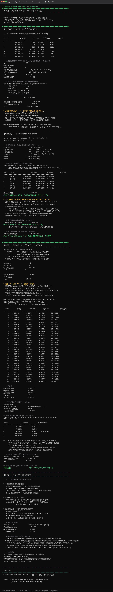
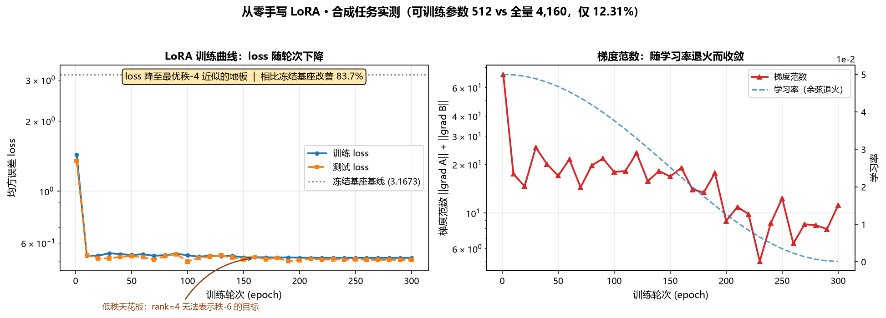

Day 35｜Transformer 与 LoRA 原理
一、教学目标
- 说清注意力机制在做什么（不需要会推导，但要能用话讲清）；
- 理解 LoRA 为什么能大幅降低训练参数量；
- 能手算 LoRA 的参数量（这是面试常考题）。
二、Transformer：用一句话讲清注意力
$$\text{Attention}(Q,K,V)=\text{softmax}\left(\frac{QK^T}{\sqrt{d_k}}\right)V$$
用一句话解释：每个词都生成三个向量——Query（我在找什么）、Key（我能提供什么）、 Value（我的实际内容）。用 Q 和所有 K 做匹配打分，按分数加权汇总所有 V。
面试版回答（背这一段就够）：
自注意力让每个位置都能直接"看到"序列中所有其他位置， 因此能并行计算并捕捉长距离依赖，不像 RNN 必须顺序处理。 Q·K 决定"关注谁"，加权 V 决定"取回什么信息"。
为什么这决定了 LoRA 的可行性：Transformer 的参数量大头在线性层（尤其是注意力的 Q/K/V/O 投影和前馈层）。这些层就是大矩阵乘法。LoRA 正是作用在这些矩阵上。
三、LoRA：低秩假设
核心观察
微调时，权重的更新量具有低秩特性——不需要用满秩矩阵来表示这个变化。
做法
原始权重 $W_0 \in \mathbb{R}^{d \times k}$ 冻结不变，额外训练两个小矩阵：
$$W = W_0 + \Delta W = W_0 + BA$$
其中 $B \in \mathbb{R}^{d \times r}$，$A \in \mathbb{R}^{r \times k}$，且 $r \ll \min(d,k)$。
- 初始化：$A$ 用随机高斯，$B$ 用零 → 训练开始时 $\Delta W = 0$，不破坏原模型；
- 前向传播：$h = W_0 x + BAx$；
- 梯度只更新 A 和 B，$W_0$ 冻结。
参数量对比（必须会算）
假设 $W_0$ 是 $4096 \times 4096$：
| 方案 | 参数量 | 相对比例 |
|---|---|---|
| 全量微调 | $4096 \times 4096 = 16{,}777{,}216$ | 100% |
| LoRA，$r=8$ | $4096 \times 8 + 8 \times 4096 = 65{,}536$ | 0.39% |
| LoRA，$r=16$ | $4096 \times 16 \times 2 = 131{,}072$ | 0.78% |
| LoRA，$r=4$ | $4096 \times 4 \times 2 = 32{,}768$ | 0.195% |
降到 1/256（$r=16$ 时）。这就是 LoRA 的核心价值。
为什么省显存（三层原因，别只答一层）
| 层次 | 原因 |
|---|---|
| 1. 优化器状态消失 | 全量微调要为每个参数存 Adam 的一阶/二阶动量（2 倍参数量）；LoRA 只为 A、B 存 → 主省这里 |
| 2. 梯度消失 | 只算 A、B 的梯度，不需要为 $W_0$ 存梯度 |
| 3. 检查点变小 | 保存的是 adapter（几 MB），不是整个模型（几十 GB）→ 便于分发与切换 |
常见的错误回答：「LoRA 省显存是因为参数少」。这只说对了一半—— 真正的显存大头是优化器状态和梯度（通常是参数量的 4–12 倍）。 参数量的减少通过这两个乘数被放大。面试时能说出这一层，就是分水岭。
四、LoRA 的关键超参数
| 参数 | 作用 | 常见取值 | 调参提示 |
|---|---|---|---|
r（秩） | 表达能力 | 4 / 8 / 16 / 32 | 任务越复杂越大；先从 8 试。PEFT 默认 <code>r=8</code> |
lora_alpha | 缩放因子，实际更新量是 $\frac{\alpha}{r} BA$ | 通常取 2r（如 r=8 → 16） | PEFT 默认 <code>lora_alpha=8</code>（不是 16）——所以想用 2r 的惯例时必须显式写 |
lora_dropout | 防过拟合 | 0.05–0.1（PEFT 默认 <code>0.0</code>） | 数据少时调大 |
target_modules | 作用在哪些层 | 通常 Q/K/V/O 投影 + 前馈层 | 只加在注意力层效果通常够；数据少时加太多层易过拟合 |
bias | 是否训练偏置项 | "none"（默认） | 一般不动 |
task_type | 任务类型 | "CAUSAL_LM" | 它继承自 <code>PeftConfig</code>，不是 <code>LoraConfig</code> 特有字段 |
<code>alpha/r</code> 这个比值才是真正的缩放系数。所以只改r不改alpha会同时改变表达能力 和有效学习率——这是新手常见的混淆点。 特别注意默认值的坑：因为 PEFT 的lora_alpha默认是 8（等于r的默认值）， 所以「默认配置」的有效缩放是8/8 = 1。而网上教程常推荐alpha = 2r， 那是r=8时alpha=16——两者差一倍。 如果你照抄代码但只改r，就会在不知情的情况下改变有效学习率。 显式写出 <code>r</code> 和 <code>lora_alpha</code>，永远是个好习惯。
LoRA 的三个重要增强开关（2026 年仍在 PEFT 内，不是替代品）
有一个常见误解：「LoRA 已经被 DoRA / rsLoRA / LoRA+ 取代了」。 实际上它们都是 LoRA 的增强选项，不是替代方案：
| 方法 | PEFT 中的用法 | 关键作用 |
|---|---|---|
| rsLoRA | LoraConfig(use_rslora=True) | 缩放因子从 alpha/r 改为 <code>alpha/√r</code>，让增大 <code>r</code> 时收益更稳定（否则大 r 反而可能变差） |
| DoRA | LoraConfig(use_dora=True) | 把权重分解为「幅度 + 方向」分别更新，低秩场景效果更好。限制：与 adapter_names 推理不兼容；不支持 megatron_core |
| LoRA+ | 不在 <code>LoraConfig</code> 里！用 from peft.optimizers import create_loraplus_optimizer(..., loraplus_lr_ratio=16) | 给 A、B 用不同学习率，官方称可提速约 2 倍、性能提升 1–2% |
⚠️ 最常见的代码错误：把loraplus_lr_ratio当成LoraConfig的参数传进去。 它属于优化器，不是配置对象 —— 传错会报TypeError。
还有一个趋势值得知道：初始化方法在分化
PEFT 的 init_lora_weights 现在支持远超早期的选项： "olora"、"pissa"、"pissa_niter_[N]"、"corda"、"loftq"、"eva"、"orthogonal"、 "mica"、"lora_ga" 等。同时 peft/tuners/ 下新增了大量 LoRA 家族适配器 （delora、gralora、hira、c3a、glora、lily、miss、osf、loha、lokr、ia3、adalora 等）。
这说明生态在「分化」，而不是「收敛到某个 LoRA 取代者」。 对你的实际意义：默认用标准 LoRA 起步，遇到具体瓶颈（大 r 不稳、效果不够）再针对性换开关， 不要一上来就纠结选哪个变体。
五、动手：用 numpy 亲手实现 LoRA
python code/ch08/10_lora_from_scratch.py这个脚本不依赖 GPU，用纯 numpy 实现并验证：
- 构造两个矩阵 $W_0$（冻结）和 $A, B$（可训练）；
- 实现前向传播 $h = W_0x + BAx$；
- 实现反向传播，验证 $W_0$ 的梯度确实为零（这是"冻结"的含义）；
- 在一个合成任务上真的训练，打印 loss 下降曲线；
- 计算并打印参数量对比表。


这个实验的教学价值：你会亲眼看到「只训练 0.4% 的参数，也能让 loss 降下来」。 比看一百遍公式都有用。
为什么第 3 步很重要：很多人能背出"LoRA 冻结原权重"， 但如果你没有亲手验证过W_0的梯度是零，你就不知道"冻结"在代码里到底是什么样的。 验证方式：反向传播后打印W_0.grad，它应该是全零矩阵或None。 这一个检查就能防止你把requires_grad设错却毫无察觉。
六、当日验收
- [ ] 能用一句话讲清自注意力在做什么
- [ ] 能手算 LoRA 的参数量（给定矩阵维度和 r）
- [ ] 能说出 LoRA 省显存的三层原因，特别是优化器状态那一层
- [ ] 跑通
10_lora_from_scratch.py，能解释 loss 曲线为什么下降 - [ ] 能解释
alpha/r这个比值的作用